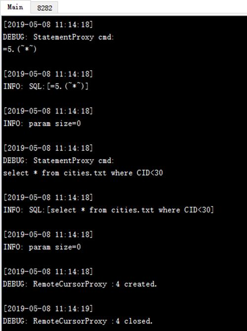

esProc JDBC resembles a database JDBC driver without a physical table. It can be simply treated as a database equipped only with the stored procedure. As a fully embedded computing engine, it performs all computations independently; whereas database JDBC serves only as connectivity interface and computations are performed in a separate database server.
To use the application, first deploy it as Deploying JDBC explains.
Cellset files used by esProc JDBC
Similar to the cross cellset call with call function, the cellset code used in esProc JDBC returns a result set through return statement, as shown in the following cellset file - createTable1.splx:
|
|
A |
B |
|
1 |
=create(ID,Amount) |
|
|
2 |
for 100 |
>A1.insert(0,#A2,rand(100*100)) |
|
3 |
return A1 |
|
The computation in this cellset is simple: A 100-record table sequence with a sequentially-set ID field and a randomly-generated Amount field is created. In A3, the return statement returns A1¡¯s table sequence. Now we¡¯ll use this cellset file to explain how to call esProc JDBC by Java.
Basic method of Java invocation
Before calling esProc JDBC to execute the cellset file, you need to configure related information according to the following instructions:
1) Load the necessary jars for launching a Java application (see Deploying JDBC for the information of jars). With a WEB application, these jars can be placed into the WEB-INF/lib folder.
2) Deploy the raqsoftConfig.xml file.
The file contains basic information for configuring esProc, including the search path, main path, data source configuration, number of concurrent tasks, log file information and connection pool and so on. The file is located in esProc¡¯s [installation directory]\esProc\config folder, and contains the same information as the settings on esProc¡¯s Option page. For the deployment, the configuration in it can be first adjusted.
Note: The configuration file should be copied and placed into the application project¡¯s class path. The name must remain raqsoftConfig.xml. For more details, refer to Deploying JDBC.
3) Deploy the script file
The above createTable1.splx can be put into either the application project¡¯s classpath or the search path specified by raqsoftConfig.xml¡¯s <splPathList/> node, or the main path specified by <mainPath/>.
4) Call the script file in Java
public void testDataServer(){
Connection con = null;
java.sql.CallableStatement st;
try{
// establish a connection
Class.forName("com.esproc.jdbc.InternalDriver");
con= DriverManager.getConnection("jdbc:esproc:local://");
// call the stored procedure; createTable1 is the name of the script file
st =con.prepareCall("call createTable1()");
// execute the stored procedure
st.execute();
// get the result set
ResultSet rs = st.getResultSet();
// process the result set simply by printing out its field names and data
ResultSetMetaData rsmd = rs.getMetaData();
int colCount = rsmd.getColumnCount();
for ( int c = 1; c <= colCount;c++) {
String title = rsmd.getColumnName(c);
if ( c > 1 ) {
System.out.print("\t");
}
else {
System.out.print("\n");
}
System.out.print(title);
}
while (rs.next()) {
for (int c = 1; c<= colCount; c++) {
if ( c > 1 ) {
System.out.print("\t");
}
else {
System.out.print("\n");
}
Object o = rs.getObject(c);
System.out.print(o.toString());
}
}
}
catch(Exception e){
System.out.println(e);
}
finally{
// close the connection
if (con!=null) {
try {
con.close();
}
catch(Exception e) {
System.out.println(e);
}
}
}
}
To call an esProc file, like the cellset file createTable1.splx, use "call createTable1()" statement to run it and return the result as the ResultSet object. In the subsequent program, simply print out the data of the result set. After the program is executed, the printout result is as follows:
